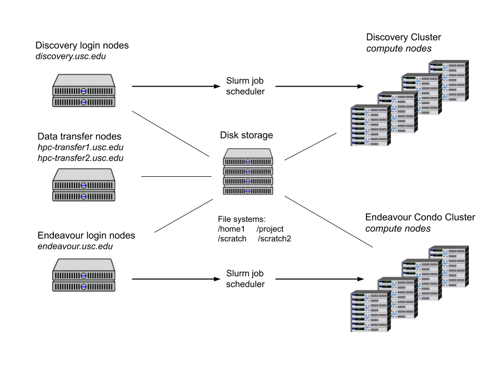
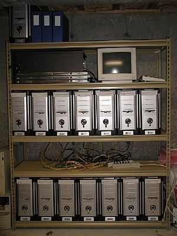
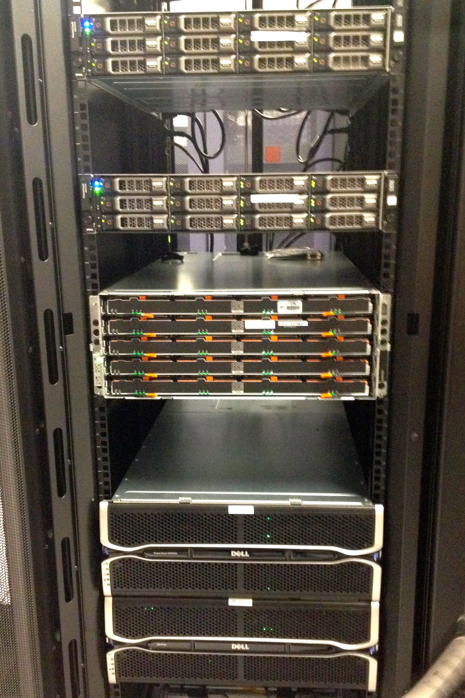
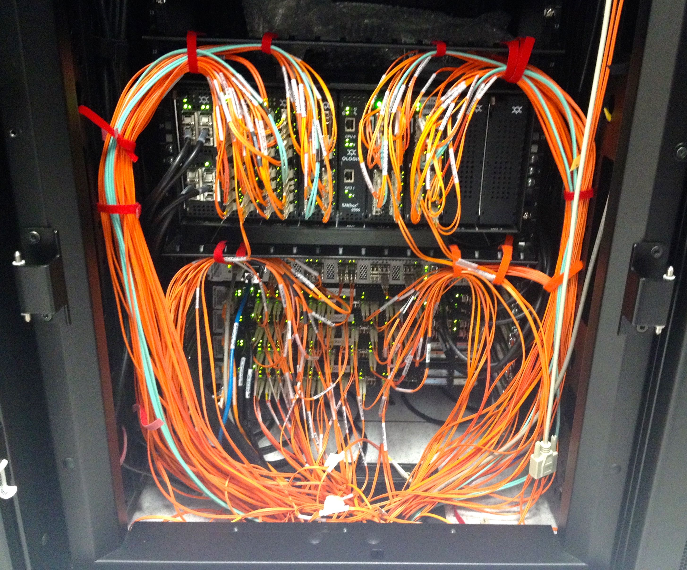
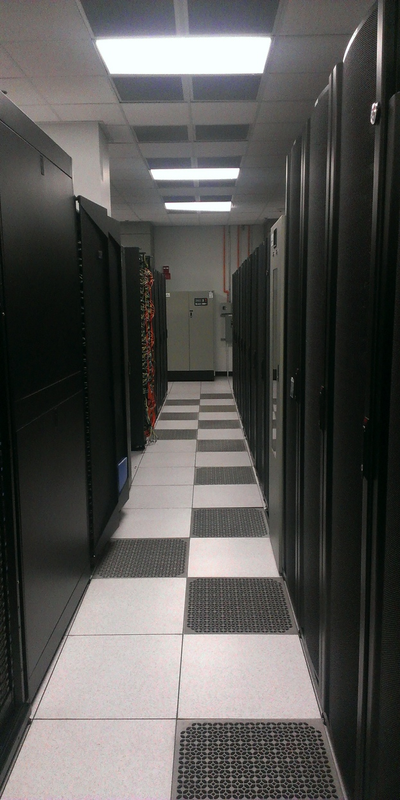
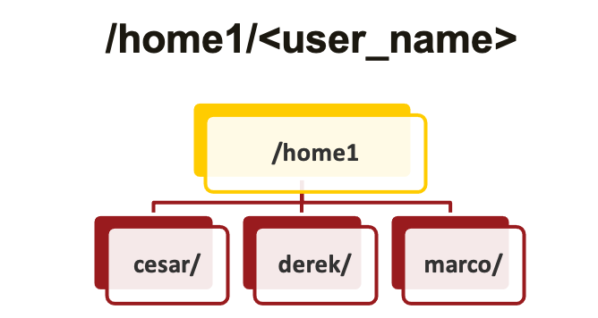
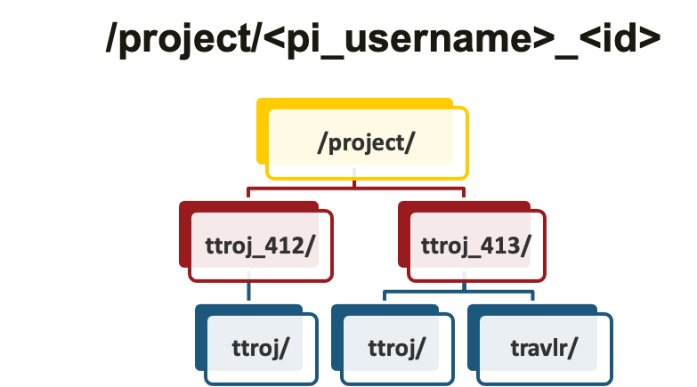
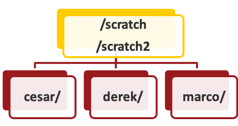

class: left, top, title-slide background-image: url('../images/cluster_pic.jpg') <h1> Intro to CARC Systems </h1> <h3> Center for Advanced Research Computing <br> University of Southern California <br> <h3> <div class="footnote"> <p> Last updated 2022-01-07</p> </div> --- ## What is HPC? - High Performance Computing - Discovery is USC's super-computer! - "Beowulf" cluster - Lots of commodity grade computers that can talk to each other - HPC resources are available at **no charge** to USC faculty, staff, students, and external collaborators --- ## Accounts - PI must be PhD-level researcher (faculty, staff, postdoc) - A PI can add members - Members can belong to multiple projects - PI can also designate "managers" to add new members, renew the project, request new resources --- ## Accounts - Projects are allocated disk space and SUs - Project members **share** quotas - To monitor quotas: - `myquota` Get disk space (and number of files) husage - `myaccount` Show remaining SUs (in CPU-minutes) --- ## Accounts |Resource for 1 hour| SU Cost| |--- |--- | |1 CPU | 1 | |1 GB Memory | 0.25 | |1 K20/k40 GPU | 2 | |1 P100 | 6 | |1 V100 | 8 | --- ## Cluster diagram <div class="left-column" style="width:35%; padding-top:1em"> <ul> <li> Login nodes (head nodes)</li> <ul> <li> <pre>discovery{1,2}.usc.edu</pre></li> <li> <pre>endeavour{1,2}.usc.edu</pre></li> <li> <pre>hpc-transfer{1,2}.usc.edu</pre></li> </ul> <li >Compute nodes <ul> <li> ~ 540 nodes running CentOS 7 </li> </ul> <li> Network storage </li> <li> Low latency network </li> <li> Slurm job scheduler/resource manager </li> </ul> </div> <div class="right-column" style="width:65%; padding-top:0em" >  </div> --- ## HPC Clusters <div class="left-column" style="width:50%; padding-top:1em"> <div class="row"> <div class="column">   </div> <div class="column">  </div> </div> </div> <div class="right-column" style="width:50%; padding-top:0em;">  </div> <!-- <div class="left-column" style="width:75%; padding-top:1em"> </<table> <tr> <td> </td> <td> </td> <td> </td> </tr> <tr> <td> <br> </td> <td> </td> </tr> </table> </div> <div class="right-column" style="width:20%; padding-top:0em"> </div> !--> --- ## Discovery Compute Nodes (as of 2022/01/05) <div style="overflow-y:scroll; height:500px"> <table> <!-- To generate table rows, run the command: sinfo -o "<tr><td>%P</td><td>%N</td><td>%D</td><td>%c</td><td>%m</td><td>%G</td><td>%f</td></tr>" Then you modify the memory and prettify the GPU names. I also added some line breaks to make it a bit easier to read. --> <tr> <th>PARTITION</th><th>NODELIST</th><th>NODES</th><th>CPUS</th><th>MEMORY (GB)</th><th>GPUs</th><th>CPU Model</th> </tr> <tr> <td>debug</td><td>e05-[42,76,78,80]</td><td>4</td><td>16</td><td>64</td><td> </td><td>xeon-2650v2</td> </tr> <tr> <td>debug</td><td>e09-18</td><td>1</td><td>16</td><td>64</td><td>K40</td><td>xeon-2640v3</td> </tr> <tr> <td>debug</td><td>e23-02</td><td>1</td><td>20</td><td>128</td><td>P100</td><td>xeon-2640v4</td> </tr> <tr> <td>epyc-64</td><td>a01-[02-05,07-09,11-14,16-19],a02-[02-05,07-09,11-14,16-19],a03-[02-05,07-09,11-14,16-19],a04-[02-05,07-09,16-19],b01-[02-04,07-08]</td><td>61</td><td>64</td><td>256</td><td> </td><td>epyc-7513</td> </tr> <tr> <td>epyc-64</td><td>b22-[01-32]</td><td>32</td><td>64</td><td>256</td><td> </td><td>epyc-7542</td> </tr> <tr> <td>main*</td><td>e16-05</td><td>1</td><td>20</td><td>64</td><td>K40</td><td>xeon-2640v4</td> </tr> <tr> <td>main*</td><td>d17-[03-40],d18-[01-38]</td><td>76</td><td>20</td><td>64</td><td> </td><td>xeon-2640v4</td> </tr> <tr> <td>main*</td><td>e06-[01-04,06-22],e11-[26-27,29,45,47],e13-[11,26,28-48],e14-[41-48],e15-[01-24]</td><td>81</td><td>16</td><td>64</td><td> </td><td>xeon-2640v3</td> </tr> <tr> <td>main*</td><td>e07-[01-16,18]</td><td>17</td><td>16</td><td>64</td><td>K40</td><td>xeon-2640v3</td> </tr> <tr> <td>main*</td><td>e16-[01-04,06-24],e17-[01-04,06-07,09-19]</td><td>40</td><td>20</td><td>64</td><td>K40</td><td>xeon-2640v4</td> </tr> <tr> <td>main*</td><td>d05-[06-15,26-42],d06-[15-28],d11-[09-47]</td><td>80</td><td>24</td><td>94</td><td> </td><td>xeon-4116</td> </tr> <tr> <td>gpu</td><td>a01-[01,06,15,20],b01-[01,06,15,20],b02-[01,06,15,20]</td><td>12</td><td>64</td><td>256</td><td>A100</td><td>epyc-7513</td> </tr> <tr> <td>gpu</td><td>a02-[01,06,15,20],a03-[01,06,15,20],a04-[01,06,15,20]</td><td>12</td><td>32</td><td>256</td><td>A40</td><td>epyc-7282</td> </tr> <tr> <td>gpu</td><td>d23-[10,13-16],e21-[01-16],e22-[01-16],e23-01</td><td>38</td><td>20</td><td>128</td><td>P100</td><td>xeon-2640v4</td> </tr> <tr> <td>gpu</td><td>d11-[02-04],d13-[02-11],d14-[03-18]</td><td>29</td><td>32</td><td>191</td><td>V100</td><td>xeon-6130</td> </tr> <tr> <td>oneweek</td><td>e01-[46,48,52,60,62,64,76],e02-[40-46,48-80]</td><td>47</td><td>16</td><td>128</td><td> </td><td>xeon-2650v2</td> </tr> <tr> <td>oneweek</td><td>e06-24,e10-12</td><td>2</td><td>16</td><td>64</td><td> </td><td>xeon-2640v3</td> </tr> <tr> <td>largemem</td><td>a01-10,a02-10,a03-10,a04-10</td><td>4</td><td>64</td><td>1024</td><td> </td><td>epyc-7513</td> </tr> </table> </div> --- ## Connecting to Discovery/Endeavour - A secure shell (ssh) is required - On Mac, use **Terminal** - On Windows, use **Command Prompt** - Should have OpenSSH - If you have your own preferred ssh client, that works too - PuTTY - MobaXterm - DUO Two Factor Authentication - [See USC/ITS page on setup](https://itservices.usc.edu/duo/) --- ## Connecting to Discovery/Endeavour - From terminal window - `ssh <username>@discovery.usc.edu` - Authenticate via DUO - "hostname" is discovery.usc.edu - username is your USC NetID --- ## Connecting to Discovery/Endeavour ```bash ttroj$ ssh ttroj@discovery.usc.edu ttroj@hpc-login3's password:🔑 Duo two-factor login for ttroj Enter a passcode or select one of the following options: 1. Duo Push to XXX-XXX-5555 2. Phone call to XXX-XXX-5555 3. SMS passcodes to XXX-XXX-5555 (next code starts with: 2) Passcode or option (1-4): 3 Success. Logging you in... ``` There may be no visual feedback when entering your password --- ## Connecting to Discovery/Endeavour ```bash Last login: Wed Aug 25 09:10:59 2021 from 76.94.200.232 ------------------------------------------------------------------------------ Welcome to the Center for Advanced Research Computing (CARC) at the University of Southern California (USC) ------------------------------------------------------------------------------ CARC website : https://carc.usc.edu User portal : https://hpcaccount.usc.edu/ User support : https://carc.usc.edu/user-support User guides : https://carc.usc.edu/user-information/user-guides ** Unauthorized use/access is prohibited ** If you log on to this computer system, you acknowledge your awareness of and concurrence with the USC CARC Acceptable Use Policy. USC will prosecute violators to the full extent of the law. ``` After logging in you'll see a "message of the day" --- ## Connecting to Discovery/Endeavour ```bash [ttroj@hpc-login3 ~]$ pwd /home1/ttroj [ttroj@hpc-login3 ~]$ hostname discovery ``` You can then run some example commands to verify login was successful --- ## Home Directories <div class="left-column" style="width:50%; padding-top:1em"> <ul> <li> Users login to <b> home directory </b> </li> <ul> <li>Personal, private directory </li> <li>Only user can modify files </li> </ul> <li> Backed up </li> <li> User quotas </li> <ul> <li> 100GB & 2M files </li> </ul> </div> <div class="right-column" style="width:50%; padding-top:0em" >  </div> --- ## Project Directories <div class="left-column" style="width:50%; paddting-top:1em"> <ul> <li> Every project has its own directory </li> <li> Only "group" members can modify files </li> <li> Beware of file permissions </li> <li> Quota can vary depending on storage allocation </li> <ul> <li> Default 5TB and 30 million files </li> <li> Can be increased to 10TB </li> <li> Additional storage in 5 TB increments $40/TB/year </li> </ul> </ul> </div> <div class="right-column" style="width:50%; padding-top:0em">  </div> --- ## Scratch Directories <div class="left-column" style="width:40%; paddting-top:1em"> <ul> <li> Only accessible by owner </li> <li> Not backed up </li> <ul> <li> Copy important files elsewhere </li> </ul> <li> cds and cds2 commands </li> <ul> <li> Quickly access scratch directories </li> </ul> <li> /scratch to be decommissioned soon </li> <li> Eventually /scratch2 will be too </li> </ul> </div> <div class="right-column" style="width:50%; padding-top:0em">  </div> --- ## Transferring Files - Directly transfer files to/from HPC on a local computer - Use Linux commands `scp` and `rsync` from a terminal window - Use a graphical *secure file transfer protocol* (sftp) client - Cyberduck, Fetch, Filezilla, etc. - See [Documentation page](https://carc.usc.edu/user-information/user-guides/data-management/transferring-files-gui) on configuration setup - High-speed transfers - Globus, bbcp - Use host `hpc-transfer.usc.edu`, `hpc-transfer1.usc.edu` --- ## From the internet to HPC - You can move files from internet to cluster - Only on head node - Login to hpc-transfer.usc.edu - Use `wget`, `git clone` to transfer - Examples - `wget ftp://ftp.ncbi.nlm.nih.gov/1GB` - `git clone https://github.com/kohler/gifsicle.git` --- ## Software repository - Globally installed software available through `lmod` ``` $ module avail ------------- /spack/apps/lmod/linux-centos7-x86_64/openmpi/4.0.2-ipm3dnv/openblas/0.3.8-2no6mfz/gcc/8.3.0 ------------- cantera/2.4.0-openblas mumps/5.2.0-openblas siesta/4.0.1-openblas hypre/2.18.2-openblas netlib-scalapack/2.1.0-openblas siesta/4.1.5 (D) ------------------------ /spack/apps/lmod/linux-centos7-x86_64/openmpi/4.0.2-ipm3dnv/gcc/8.3.0 ------------------------- bigdft/1.9.1 lammps/29Oct20 relion/3.1.1-cuda-10.1 boost/1.73.0-openmpi (D) matio/1.5.13 relion/3.1.1-cuda-11.1-k40 charmpp/6.10.2-cuda mpiGraph/10.27.2020 relion/3.1.1-cuda-11.1 (D) charmpp/6.10.2-ucx (D) namd/2.14 scotch/6.0.8 fftw/3.3.8-dp netcdf-c/4.7.3 sundials/3.1.2 fftw/3.3.8-sp (D) netcdf-fortran/4.5.2 sundials/5.1.0 (D) gromacs/2020.3 osu-micro-benchmarks/5.7 tau/2.29 (D) hdf5/1.10.6 parmetis/4.0.3 valgrind/3.15.0-openmpi hmmer/3.3 quantum-espresso/6.5-openblas-hdf5 hpctoolkit/2019.12.28 relion/3.1_beta ------------------------ /spack/apps/lmod/linux-centos7-x86_64/openblas/0.3.8-2no6mfz/gcc/8.3.0 ------------------------ jags/4.3.0 r/3.5.3 r/4.0.0 (D) r/4.1.0 suite-sparse/5.3.0-openblas plink2/2.00a2.3-openblas r/3.6.3 r/4.0.3 rsem/1.3.1 ----------------------------------- /spack/apps/lmod/linux-centos7-x86_64/gcc/8.3.0 ------------------------------------ adapterremoval/2.3.1 lzma/4.32.7 argtable/2-13 lzo/2.10 aspera-cli/3.7.7 m4/1.4.18 ``` --- ## Software repository - Modules enable a few different things - Give access to software - Manage environment (to prevent incompatible software) - Gives documentation on how software was built - Hides "incompatible" packages - Useful `lmod commands`: |Command| Use| |---|---| |`module avail`| See what is available| |`module avail <package_name>` | Search for modules with `<package_name>` in name| |`module spider <package_name>` | Search whole library for `<package_name>` | |`module {un}load <package_name>` | {Un}load module for `<package_name>` | --- ## Submit a Batch Job - Use a **job script** to submit a batch job to the cluster - Add SLURM resource requests - Add commands to set up environemnt - Add commands to launch your program - Submit your job to the queue - `sbatch myjob.slurm` `myjob.slurm` ```bash #!/bin/bash #SBATCH --ntasks=1 #SBATCH --cpus-per-task=4 #SBATCH --mem-per-cpu=1GB #SBATCH --time=00:30:00 module load python python my_cool_script.py ``` --- ## Interactive Jobs - Used to test if: - Program has adequate resources - Program installed properly - Correct syntax - Use `salloc` to request interactive job ``` $ salloc --ntasks=1 --cpus-per-task=1 --time=0:30:00 --partition=debug salloc: Pending job allocation 1875456 salloc: job 1875456 queued and waiting for resources salloc: job 1875456 has been allocated resources salloc: Granted job allocation 1875456 salloc: Waiting for resource configuration salloc: Nodes e01-60 are ready for job ``` --- ## Interactive Jobs Lets run this python script ```python import numpy as np import datetime as dt today=dt.datetime.today() print("It sure is a lovely %s." % today.strftime('%A')) some_data=np.random.rand(100,100) np.savetxt("output.txt",some_data) ``` --- ## Batch Jobs - Lets submit as batch job - Monitor progress with `squeue -u <your_username>` ```bash #/bin/bash #SBATCH --ntasks=1 #SBATCH --cpus-per-task=1 #SBATCH --time=0:30:00 module load python/3.9.2 python3 test.py sleep 60 ``` --- ## Some Slurm commands | | | |--- |---| |`sbatch` | Submit a batch job| |`salloc` | Submit an interactive job| |`scancel` | Cancel a job| |`squeue -u <username>`| Check all jobs in queue owned by `username`| |`sinfo2` | Display detailed node information| |`sinfo` | Display node information| --- ## `squeue` `squeue` documentation page: https://slurm.schedmd.com/squeue.html - Display status of jobs and jobsteps - `squeue --help` - All jobs: ``` [ttrojan@discovery1 ~]$ squeue | head 4679566 main discover sunwool R 2:19:33 8 d23-[13,15-16],e21-14,e22-[08-09,12],e23-01 4680126 main discover sunwool R 39:11 8 d23-[13-16],e22-[05-06,08-09] 4678655 main job.slur liukuang R 11:09:20 1 d14-08 4679445 main 1086-7B asareh R 4:18:00 1 d11-46 4679444 main 1086-7B asareh R 4:19:31 1 d05-40 ``` - Just your jobs: ``` [ttrojan@discovery1 ~]$ squeue -u ttrojan JOBID PARTITION NAME USER ST TIME NODES NODELIST(REASON) 3678639 epyc-64 test_1 ttrojan PD 0:00 4 (Resources) 3678721 epyc-64 test_2 ttrojan PD 0:00 4 (Priority) 3675759 epyc-64 test_3 ttrojan R 1-01:48:12 2 b22-[29-30] ``` --- # Slurm `sbatch` options |Option| Meaning| |---|---| |`--account=<account>`|Which account to charge cpu time| |`--partition=<partition_name>`|Which partition to submit to, for condo owners| |`--ntasks=<amount>`|Max nodes to use (sorta, keep 1 if not using MPI)| |`--mem_per_cpu=<amount>`|RAM per CPU| |`--gres=gpu:<GPU_TYPE>:<amount>`|Type and number of GPU to request| |`--time=<amount>`|How long job will run| --- # Slurm `sbatch` options |Option| Meaning| |---|---| |`--constraint=<attribute>`|Node property to request (Currently only CPU type)| |`--mail-user=<email>`|Where to send email alerts| |`--mail-type=<BEGIN`,`END`,`FAIL`,`REQUEUE`,`ALL>`|When to send email alerts| |`--output=<out_file>`|Name of output file| |`--error=<error_file>`|Name of error file| |`--job-name=<job_name>`|Job name| For more details see https://slurm.schedmd.com/sbatch.html --- # Discovery queues/partitions |Queue Name| Use | Max Walltime| Max CPU count| Max Jobs/User| |---|---|---|---|---| |`main`|General purpose| 48 hours| 1200|5000| |`epyc-64`|Advanced parallel jobs| 48 hours| 1200|5000| |`gpu`|Access to GPUs purpose| 48 hours| 1200|5000| |`largemem`|Access to nodes with 1TB memory| 1 week| 120|5000| |`oneweek`|Long running jobs| 1 week| 208|5000| |`debug`|Testing| 30 minutes| 48|5000| --- ## Important Things to Note - Make sure you are not on the login node when you launch an application - You can check the system you are on by typing hostname - Make sure you reserve as many processors as you need - A mismatch here can increase your runtime or wait time - Make sure you reserve as much RAM as needed - Overestimating increases wait time, underestimating crashes - Know which resources work the best - Sometimes using a debug or epyc-64 is better --- ## Resources - CARC home page - https://carc.usc.edu - CARC User Forum - https://hpc-discourse.usc.edu/categories - SLURM tutorials - https://slurm.schedmd.com/tutorials.html - SLURM quick reference - https://slurm.schedmd.com/pdfs/summary.pdf --- count: false ## Resources - CARC home page - https://carc.usc.edu - CARC User Forum <- the most value for the community! - https://hpc-discourse.usc.edu/categories - SLURM tutorials - https://slurm.schedmd.com/tutorials.html - SLURM quick reference - https://slurm.schedmd.com/pdfs/summary.pdf --- ## Getting Help - Request assistance - Email carc-support@usc.edu - Office Hours (drop-in) - Every Tuesday@2:30pm (Zoom) - Learn more! - Visit carc.usc.edu - Request a consultation (anytime) - Attend a Workshop (when scheduled) --- # Thank you for attending! # Questions? # carc-support@usc.edu Slides based on work by Tomek and Derek, thank you!